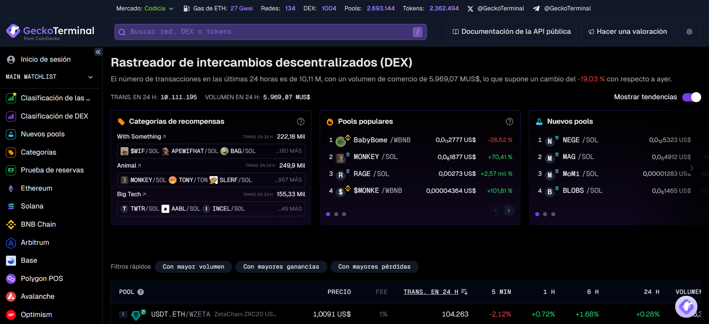

Estrategias
La herramienta mas potente que puedes introducir a tu estrategia de analisis onchain sera Arkham, aqui podras encontrar proyectos, protocolos, billeteras e instituciones de forma facil, una vez que indentifiques algunas podras hacerle mas siguimiento con el uso de alertas, y un dashboard que te permite organizar y filtrar a tu gusto
Con DexCheck podemos hacer un analisis profundo de proyectos y billeteras, esta plataforma nos proporciona datos sobre volumen, liquidez, holders capitalizacion de mercado y cientos de datos extras que siempre hay que tener en cuenta a la hora de analizar movimientos.
Esta herramienta te brinda mucha informacion en todas las cadenas de bloques, donde podras navegar por diferentes proyectos verificados por la platafoma, lo que les da veracidad a los mismos. los requisitos pueden ser, alto volumen de compra venta, contratos renunciados y otras caracteristicas que los analistas onchain buscan en las DeFi.
Existen multiples scanners por red, aqui podras leer el codigo de los proyectos, ver la cantidad de holders y en caso de ser una billetera podras ver sus movimientos de una forma bastante interactiva, ver los hash de las transacciones. Para encontrar el scanner segun tu red de preferencia recomiendo colonar el nombre de la red seguido de la palabra scanner, por ejemplo Solana scanner, Avalanche scanner, Cardano scanner. esta herramienta es muy usada por instituciones y traders profesionales.